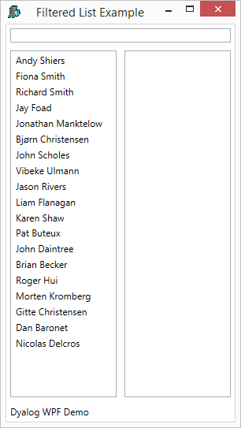
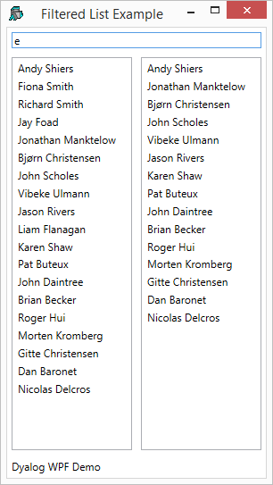
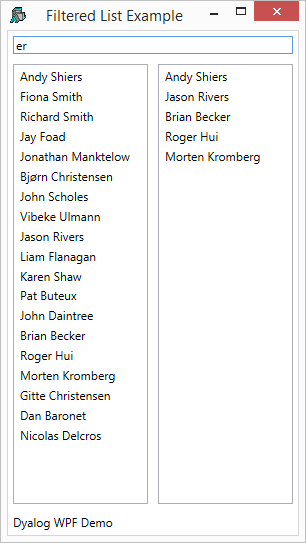

WPF data binding provides the means to bind controls that display lists of items, such as the ListBox, ListView, and TreeView controls, to collections of data. These controls are all based upon the ItemsControl class. To bind an ItemsControl to a collection object, you use its ItemsSource property.
If the right argument of 2015⌶ names a variable, or a namespace containing a variable, that is a vector other than a simple character vector, it returns a Binding Source object that provides the necessary interfaces to bind the variable as a collection to the ItemSource property of an ItemsControl.
The APL variable will normally contain a vector of character vectors, because most ItemsControl objects deal with collections of strings. However, any APL vector other than a simple character vector will be treated in this way.
This example illustrates binding between a variable containing a vector of character vectors, to the items of a ListBox.
Incidentally, the ItemsSource property overrides the Items collection as a means to specify the content of the ItemsControl. When the ItemsSource property is set, the Items collection becomes read-only and of fixed-size. Note that the ItemsSource property supports OneWay binding by default.
The variable XAML_FilteredList, shown below, contains XAML to specify a Window containing a StackPanel. The StackPanel control is a WPF layout control that organises child controls in a single line, by default vertically. In this example, the StackPanel contains a TextBox and, below it, a WrapPanel, and below that a TextBlock. The WrapPanel is also a layout control that organises its child controls sequentially from left to right. The WrapPanel contains two ListBox controls.
<Window
xmlns="http://schemas.microsoft.com/winfx/2006/xaml/presentation"
xmlns:x="http://schemas.microsoft.com/winfx/2006/xaml"
Title="Filtered List Example"
SizeToContent="WidthAndHeight"
Topmost="true">
<StackPanel>
<TextBox Name="filter" Margin="5"
Text="{Binding Filter,Mode=TwoWay,
UpdateSourceTrigger=PropertyChanged}"/>
<WrapPanel>
<ListBox Name="all" Width="135" Height="440"
Margin="5" ItemsSource="{Binding DyalogNames}"/>
<ListBox Name="filtered" Width="135" Height="440"
Margin="5" ItemsSource="{Binding FilteredList}"/>
</WrapPanel>
<TextBlock Text="Dyalog WPF Demo" Margin="5"/>
</StackPanel>
</Window>
∇ FilteredList;MySource;win;sink
[1]
[2] MySource←⎕NS''
[3] MySource.Filter←''
[4] MySource.FilteredList←0⍴⊂''
[5] MySource.DyalogNames←DyalogNames
[6]
[7] win←LoadXAML XAML_FilteredList
[8] win.DataContext←2015⌶'MySource'
[9] (win.FindName⊂'filter').onTextChanged←
'FilteredList_TextChanged'
[10] sink←win.ShowDialog
∇
Like the previous example, this example uses a namespace MySource containing the bound variables Filter, FilteredList and DyalogNames.
FilteredList[8] creates a Binding Source object and assigns it to the DataContext property of the Windowwin.
[8] win.DataContext←2015⌶'MySource'
The DataContext property is inherited by all child controls , so they all share the same Binding Source. Their different Paths to different values in the Binding Source are specified in the XAML as follows.
The Text property of the TextBox named filter is bound to the variable Filter by the expression Text="{Binding Filter,...
<TextBox Name="filter" Margin="5"
Text="{Binding Filter,Mode=TwoWay,The ItemsSource property of the ListBox named all is bound to the variable DyalogNames by the expression ItemsSource="{Binding DyalogNames}"
<ListBox Name="all" Width="135" Height="440"
Margin="5" ItemsSource="{Binding DyalogNames}"/>Thirdly, the ItemsSource property of the ListBox named filtered is bound to the variable FilteredList by the expression ItemsSource="{Binding FilteredList}"
<ListBox Name="filtered" Width="135" Height="440"
Margin="5" ItemsSource="{Binding FilteredList}"/>FilteredList

If the user types a single character, in this case "e", into the TextBox, this fires a TextChanged event which in turn fires the callback function shown below:
∇ FilteredList_TextChanged a;hits
[1] hits←(⊂MySource.Filter){∨/⍺⍷⍵}¨DyalogNames
[2] MySource.FilteredList←hits/DyalogNames
∇
When the callback runs, the variable MySource.Filter, which is bound to the Text property of the TextBox, will contain "e". The function calculates a mask hits which identifies which members of the variable DyalogNames contain this string. It then assigns that subset to the variable MySource.FilteredList. This is bound to the ItemsSource property of the right-hand ListBox, so the result is as follows:

Similarly, typing "er" into the TexBox reduces the number of hits as shown below:
